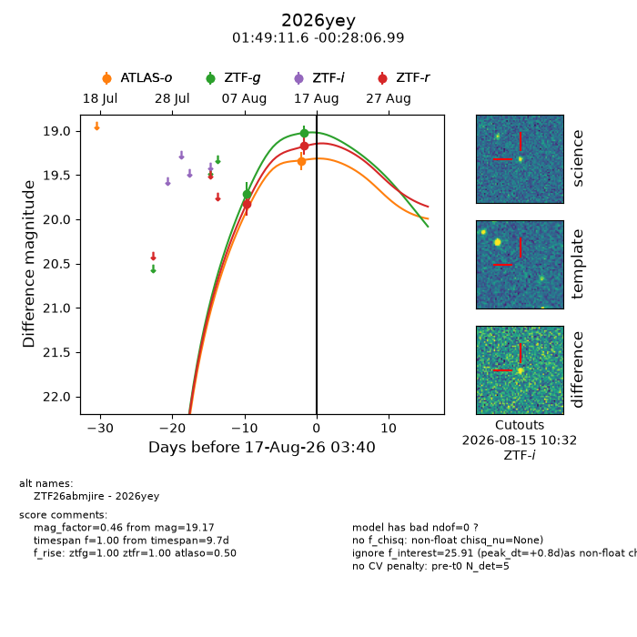
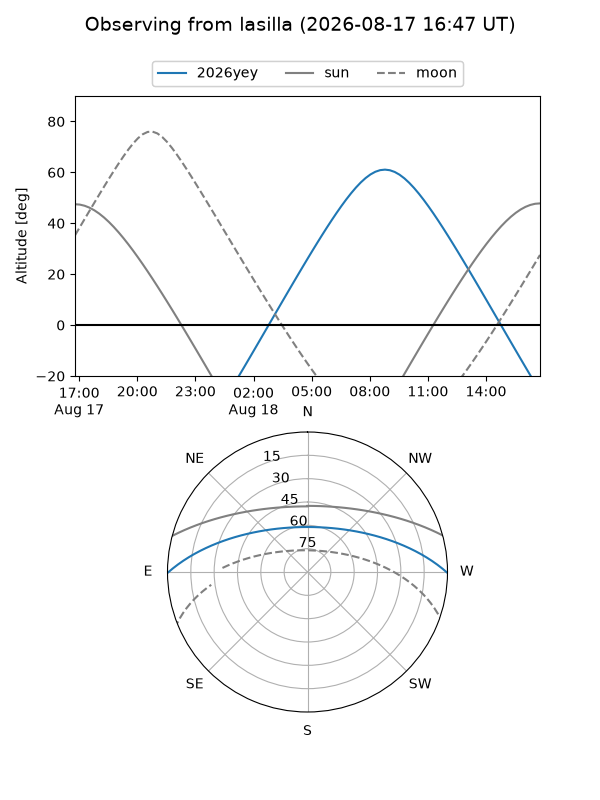
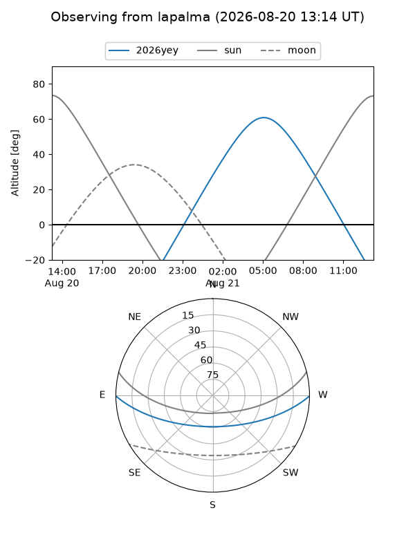
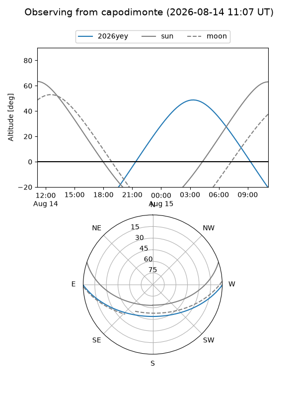
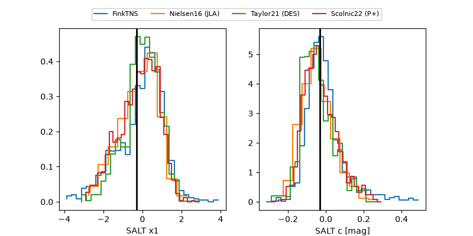

2026yey
Target 2026yey at 2026-08-17 03:43
Aliases and brokers:
FINK-ZTF: ztf.fink-portal.org/ZTF26abmjire
Lasair-ZTF: lasair-ztf.lsst.ac.uk/objects/ZTF26abmjire
ALeRCE-ZTF: alerce.online/object/ZTF26abmjire
YSE-PZ: ziggy.ucolick.org/yse/transient_detail/2026yey
TNS name: wis-tns.org/object/2026yey
Direct TNS query: direct search
alt names
ZTF26abmjire (ztf,fink_ztf)
2026yey (tns,yse)
Coordinates:
equatorial (ra, dec) = 27.2985,-0.46861
equatorial (HMS+DMS) = 01:49:11.64,-00:28:06.99
galactic (l, b) = (152.7937,-59.94866)
Flags:
TNS type: nan
peak dt: +0.8
Photometry:
last atlaso=19.34, ztfg=19.03, ztfr=19.17
1 atlaso, 2 ztfg, 2 ztfr detections
Lightcurve

Visibility



Additional plots
